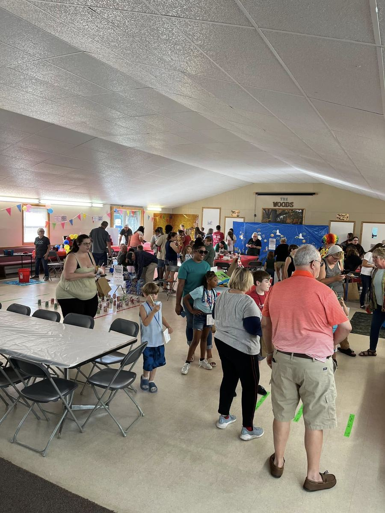
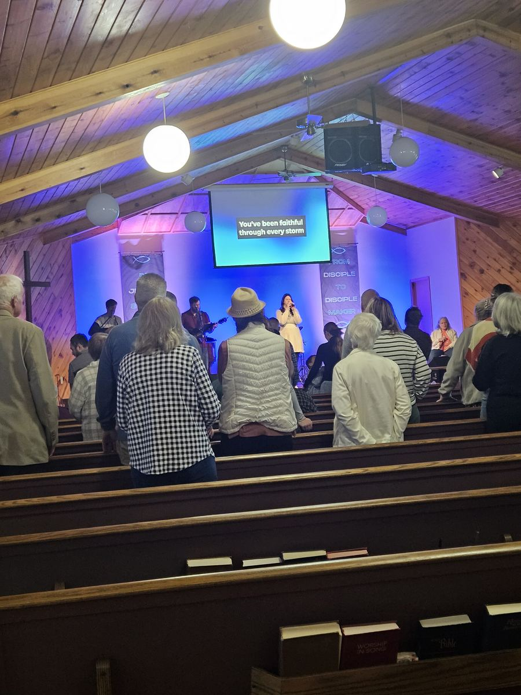
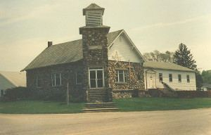

Mission
To reach people here and abroad with the message of Jesus.
Acts 1:8
About
A Free Methodist church in Stanwood, with a mission to reach people with the message of Jesus.
Who we are
Mission
To reach people here and abroad with the message of Jesus.
Acts 1:8Purpose
To love God, love people, and make disciples.
Matthew 22:37–40; 28:19–20Vision
To be a place where life comes to LIFE!
John 10:10Values
People
The people who lead our ministries, alongside a whole church family that serves with them.
Lead Pastor
Pastor Aaron Mote is blessed to serve as lead pastor at The Woods. He is an ordained elder in the Free Methodist Church and received his ministry education through its Center for Pastoral Formation. He has been in vocational ministry for more than ten years, serving in roles from youth pastor to lead pastor. Aaron and his wife, Jaimie, love the Stanwood community and share a passion to see people radically saved and changed by Jesus. His goal is for The Woods to be a place where anyone, whether new to faith or coming home after time away, can meet Jesus and find a church family.
Director of Children’s Ministries
Cara Hale is thrilled to lead the children’s ministries at The Woods. She has years of experience working with kids, and along the way she found a real passion for teaching young ones about the love of Jesus Christ. Whether it’s Go Kids on Sunday mornings or Kingdom Kids on Wednesday nights, Cara wants every child to know they are seen, loved, and welcome here. She is a dedicated mother of three, and on Sunday mornings you’ll also find her leading worship with the worship team. Cara pours her heart into this church family in more ways than most people ever see, and The Woods is better for it.

The whole church family
A church is a whole lot more than the staff. The Woods is carried by its people: a board that takes its responsibility seriously and prays over the decisions it makes, and volunteers and members who teach and care for our kids, lead worship, cook meals, set up for events, pray for one another, and welcome every new face.
Most of that work happens quietly, without a title or any recognition, and this church wouldn’t be what it is without our volunteers. If you call The Woods home, thank you. And if you’re new, these are the people who will save you a seat.
Our story
More than a hundred years ago, a small group gathered in a maple grove just west of Stanwood, Michigan. They prayed and preached together until there were enough of them to begin the first Free Methodist Church of Stanwood.
People have been finding God at The Woods ever since. We want to keep being a church where people can seek God, hear the message of Jesus, and walk with others who are doing the same.
Whether you have lived in Stanwood for years or you are new to the area, you are welcome here.

Where we belong
We are part of the Shoreline Conference in West Michigan. If you’d like to learn more about the conference, visit shorelinefmc.org.
We’re a Free Methodist church. If you’d like to learn more about our beliefs, visit fmcusa.org/webelieve.